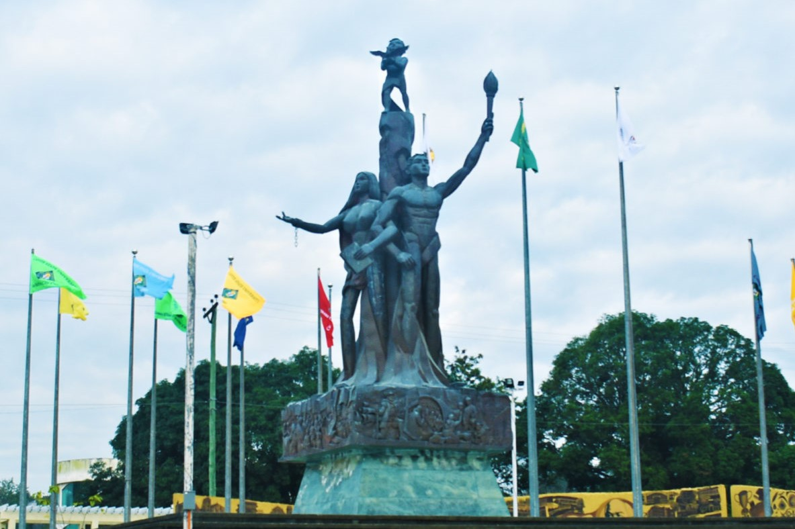

The Laya at Diwa (lit. "Freedom and Spirit") is the official historical landmark and iconic centerpiece sculpture of Cavite State University (CvSU), a public state university located in Indang, Cavite, Philippines. Standing prominently within the university's main campus grounds, the statue serves as an enduring symbol of the institution's founding ideals — academic freedom, intellectual pursuit, and the indomitable spirit of the Iskolar ng Bayan (Scholar of the Nation).
Overview

The Laya at Diwa statue occupies a place of honor at the main thoroughfare of Cavite State University's Indang campus. Unveiled in a formal dedication ceremony attended by university officials, faculty, students, and government representatives, the landmark has since become one of the most photographed and recognizable features of the CvSU campus landscape.
The statue's name — Laya (Freedom) and Diwa (Spirit or Essence) — reflects the dual aspirations of the university: to produce graduates who are not only technically competent but also imbued with a free and discerning mind, ready to serve the nation with integrity and purpose. It stands as a visual declaration of the university's core values of Truth, Excellence, Service, and Integrity.
As a physical landmark, Laya at Diwa marks both the geographical and symbolic heart of the CvSU community. Generations of students have gathered at its base for photographs, commemorations, and quiet reflection — making it as much a living tradition as a piece of institutional heritage.
Physical Description
Design & Symbolism
There are five basic elements in the artwork together with the symbolic figures and meanings.
The Unchained Female Figure Holding a Book, represents the empowered Filipina woman. She is beauty personified and today's contemporary woman – a mother, a nurturer, an educator, and a humble servant to humanity.
The Male Figure with Pen and Torch represents the dignified Filipino father – strong, prominent, dignified and excellent in his field of endeavor besides being portrayed as persistent searcher of truth. The Flame of the Torch carries the letters CvSU for Cavite State University – serving as the guiding light of his noble quest. The Interlocked Arms of the Man and the Woman signifies unity of purpose and directions.
The Child Figure, in dynamic pose standing on top of the pillar and reaching out a dove, represents the youth in general and recognized as the proverbial hope of the future that needs molding and nurturing. The Dove symbolizes peace and freedom.
The Central Pillar symbolizes growth and development. It represents Filipino's common aspiration for an improved quality of life – a kind of life with equity, peace, justice and harmony. The Pillar is ever growing, directed higher but always deeply rooted in history as depicted by the murals on the sides of the base.
The Murals show the important historical events that took place in the province of Cavite and throughout the Philippines and portray events showing Filipino's life and spirit under imperial Spain and other colonizers including their continuing struggle for freedom and independence.
Structure
The entire artwork is mounted on a CvSU logo - shaped base to served as a fitting reminder to the entire CvSU community of its great responsibility to remain faithful to the University's vision and mission and to hold sacred its tenets of TRUTH, EXCELLENCE, SERVICE and INTEGRITY.
History & Dedication
Origin
“Laya at Diwa” is a creation of the Castrillos of Imus, Cavite, led and supervised by Jonnel P. Castrillo. This also reflects the vision and determination of Dr. Ruperto S. Sangalang, the CvSU President at that time, to transform the University into a truly global university. It was inaugurated on December 15, 2006 br Ho. Senator Edgardo J. Angara, on the occasion of the University's centenary celebration.
Cultural Significance
Beyond its function as a decorative campus feature, the Laya at Diwa statue has taken on a deeply cultural and emotional significance for students, faculty, and alumni of Cavite State University. It serves as a backdrop for commencement photographs, a meeting point for student organizations, and a quiet landmark for solitary contemplation.
The statue is frequently cited in student essays, alumni memoirs, and university publications as a formative symbol of their CvSU experience. For many graduates, a photograph at the base of Laya at Diwa — often taken on the day of commencement — is among the most treasured mementos of their academic journey.
In the broader context of Philippine higher education, the landmark represents the tradition of state universities commissioning works of public art that encode institutional values in permanent, accessible form — making abstract ideals of truth and service visible and tangible to every member of the campus community.
Location on Campus
The Laya at Diwa statue is situated on the main campus of Cavite State University in Indang, Cavite. It stands near the primary entrance of the campus, making it one of the first structures visible to visitors and incoming students. The surrounding area is maintained as a landscaped garden with benches and paved pathways, designed to encourage visitors to pause and engage with the landmark.
References
- Cavite State University — Official Website. cvsu.edu.ph
- KABSU Wiki Editorial Team. University Overview — Historical Landmark. May 2026.
- CvSU Office of Public Affairs. Campus Landmarks and Heritage. Indang, Cavite.
- University Communications Office. Symbols of CvSU: A Visual Guide. 2020.